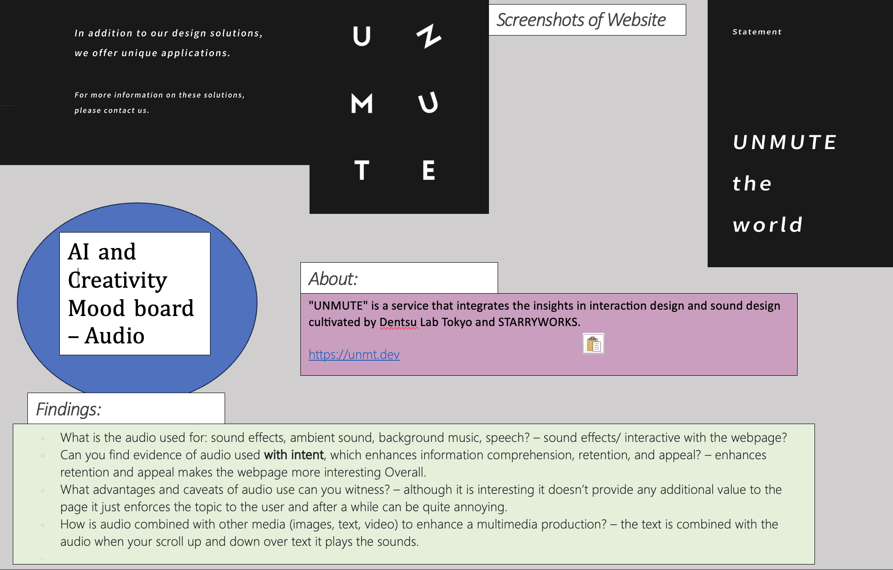

AI tools and their impact on creative media projects - MAD WEEK 8
MAD(A) Week 8 Audio
Updated Moodboard for Video Usuage:
Evaluating Webpage Audio use: https://unmt.dev
Audacity editied Audio:BBC typing Audio
Medium Mono Audio
Medium Stereo Audio
Standard Stereo Audio
Overall finding applicable Audio's for my webapge theme was difficult as i generally revolves around AI and video. But in the examples given the quality of audio and editing ability of audio is reflected.